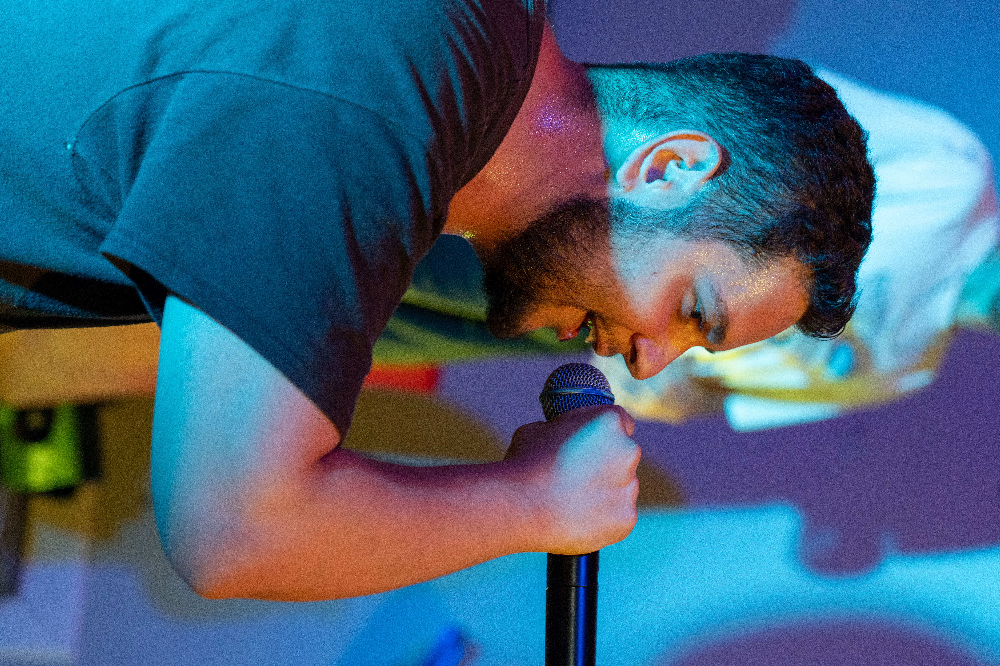
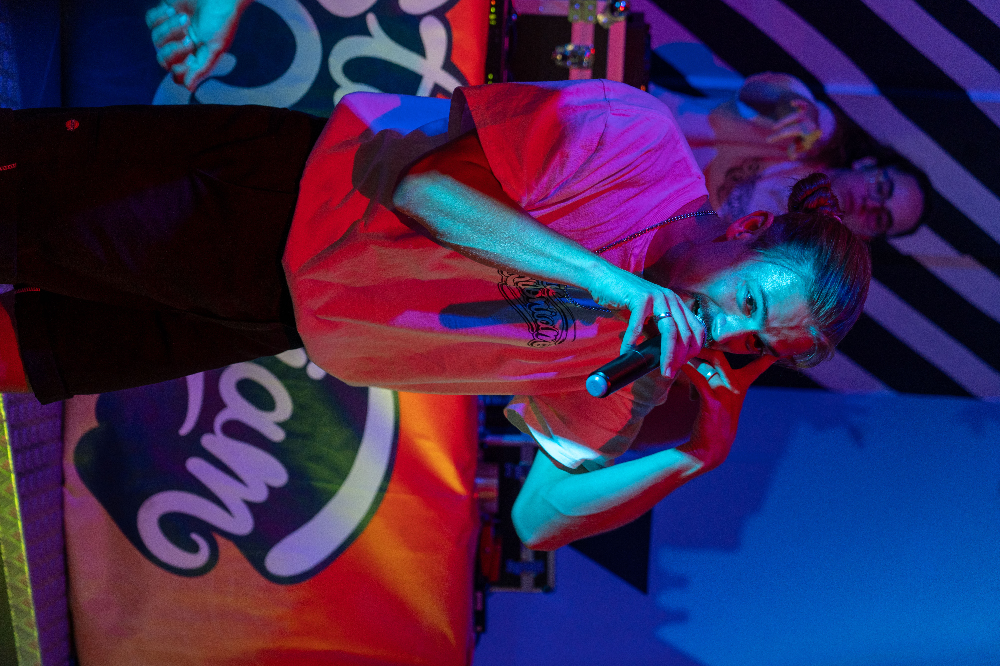
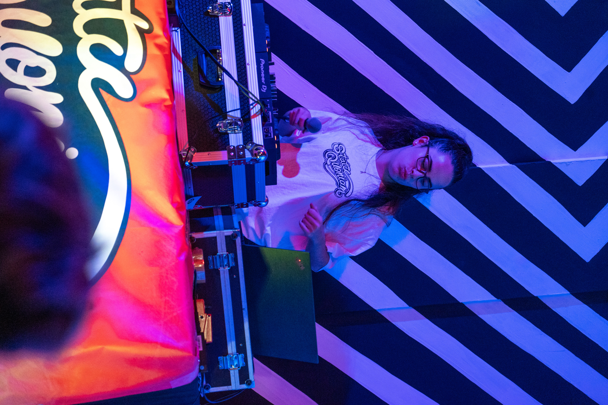
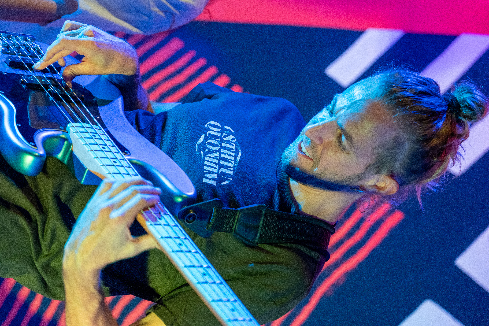

Orígens i formació
Statu Quoniam — coneguts també com La SQ — és un projecte de rap i música urbana en català fundat a Cardedeu a mitjans de la dècada del 2010. Els seus fundadors són Levico i Trejjo, veïns del mateix municipi i companys d’institut. Tots dos compartien des de molt petits una passió profunda pel rap, l’hip-hop i la cultura urbana, i aquesta afinitat els va unir definitivament durant els anys escolars.
Després de classe, es trobaven sovint per escriure lletres, compartir influències i treballar en noves idees. D’aquests exercicis constants va sorgir una complicitat creativa que acabaria cristal·litzant en la decisió de formar un grup propi: així neixia Statu Quoniam.
En els primers anys del projecte, al duet s’hi va sumar el Balter_DLZ com a DJ, que va completar la primera formació i va contribuir a definir el so inicial del grup. Balter va estar actiu amb la SQ durant els primers temps, almenys fins que va decidir deixar el projecte. En els anys posteriors, el grup va evolucionar i va incorporar nous membres: DJ Adry (com a DJ) i Cesc (baixista), donant lloc a la formació actualment consolidada.
Des del primer moment, Statu Quoniam ha mantingut un enfocament clar: utilitzar la música com a espai d’expressió social i personal, i construir un estil que combina lletres crítiques amb una energia fresca i ballable. L’escena alternativa catalana (centres socials, espais autogestionats, festes majors) va ser el seu primer espai natural de creixement, on van anar guanyant reconeixement i públic.
Trajectòria i estil
La proposta de Statu Quoniam integra hip-hop, funk, electrònica i break amb un missatge social potent. Les seves lletres aborden temes com la desigualtat, la identitat cultural, la resistència quotidiana i la crítica als discursos simplistes que amaguen problemàtiques estructurals.
Amb el temps, la seva música s’ha tornat més complexa i madura, però conserva una essència combinada: combativa, poètica, irònica i alhora festiva.
El seu directe — intens, participatiu i molt proper — els ha ajudat a obrir-se pas tant en circuits alternatius com en festes majors i festivals locals.
Discografia i projectes
Els de Sempre (2025): primer LP oficial, amb 10 temes i una producció cohesionada que consolida la maduresa del projecte.
Participació en el recopilatori “Rap de la Terra” (2018) amb la cançó Cocció Lenta, fet que els situa dins la nova onada del rap en català.
Publicació de diversos singles i col·laboracions en l’escena urbana catalana.
Actuacions i reconeixement
Statu Quoniam ha actuat en nombroses festes majors, festivals i espais culturals a Catalunya. El seu directe destaca per la capacitat de connectar amb públics diversos — des d’aficionats del rap fins a gent que no hi està familiaritzada.
També han participat en programes i iniciatives dedicades al rap i la cultura urbana del país.
Al gener de 2025, Statu Quoniam va fer un pas clau en la seva trajectòria participat al OPFest, organitzat per les televisions de Catalunya, on van assolir un impressionant segon lloc, consolidant-se com un dels grups més rellevants de la nova escena urbana catalana.
Rellevància i futur
Amb un estil que combina missatge transformador i energia escènica, la SQ ja s’ha consolidat com una de les veus rellevants del rap en català contemporani. El seu primer LP obre una nova etapa, amb possibilitats d'expansió cap a nous escenaris, col·laboracions i projectes més ambiciosos.
Tot indica que el grup es troba en un moment creatiu plenament actiu, amb un camí clar per continuar creixent sense perdre les arrels: Cardedeu, l’amistat entre Levico i Trejjo i el compromís amb la música urbana com a eina d’expressió i resistència.

Artistes
Levico i Trejjo – Vocals i fundadors del projecte
Amics de tota la vida i veïns de Cardedeu, són l’origen de la SQ. Van començar escrivint lletres junts durant l’institut i comparteixen una visió artística marcada pel rap, l’hip-hop i la cultura urbana. Són les dues veus principals del grup i el nucli creatiu del projecte.
DJ Adry – DJ
Incorporat en una etapa posterior, pren el relleu del DJ original i ajuda a definir el so actual de la formació amb una base electrònica, urbana i sòlida que reforça el directe.
Cesc – Baixista
Afegeix al projecte una capa musical més orgànica i rítmica, combinant-se amb les bases electròniques i donant més força i presència als concerts

Trejjo
Vocal

Levico
Vocal

DJ Adry
DJ

Cesc
Baixista